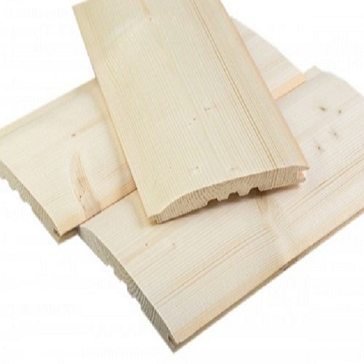
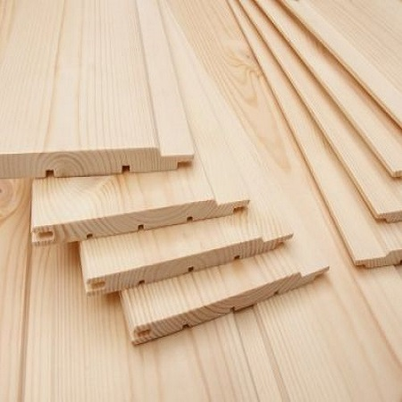

G.J.S. Galiński
Podbitka


Mamy do zaoferowania przepiękną podbitka świerkową wykonaną z najwyższej klasy tarcicy. Bezkompromisowa jakość i ładny profil Softline powodują, że jest to towar z najwyższej półki. Podbitka jest suszona do 20% wilgotności, zatem świetnie nadaje się do montażu na zewnątrz.
Wymiary
- grubość:. 15mm
- szerokość: 120mmo
- długości: zadzwoń i zapytaj o aktualne długości
- pakowane i ofoliowane po 8 szt.
- sprzedajemy całymi paczkami
- paczka dł. 4,10m tj. 3,729m2
Cena
35 zł/m2 brutto za m2 brutto